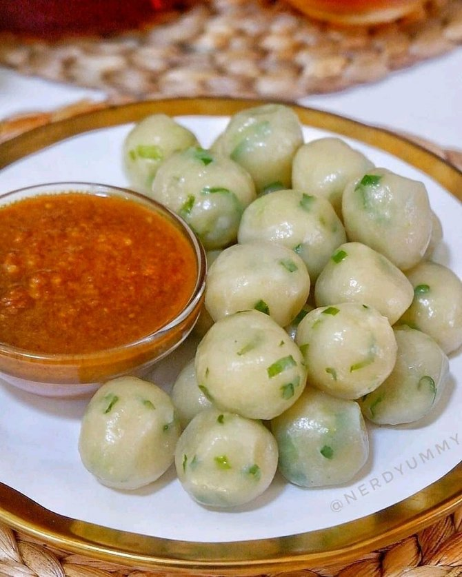

Ote ote udang

Bahan-bahan
- 100 gram udang (ukuran sedang)
- 200 gram tepung terigu
- 2 buah wortel (potong korek api)
- 1/2 bungkul kol (iris halus)
- 150 gram kecambah panjang
- 2 batang daun bawang (iris halus)
- 3 batang daun seledri (iris halus)
- 2 butir telur
Bumbu halus
- 6 siung bawang putih
- 5 siung bawang merah
- secukupnya merica
- 1/2 ruas ibu jari kunyit
- 1 sachet royko (penyedap rasa)
- secukupnya garam
Cara membuat
- Potong2 dan cuci bersih semua sayuran.
- Haluskan semua bumbu, bawang putih, bawang merah, kunyit dan merica.
- Larutkan tepung terigu dengan air es.
- Masukkan bumbu yg sudah dihaluskan kedalam adonan tepung.
- Masukkan semua sayuran yg sudah dipotong2.
- Tambahkan telur, penyedap rasa dan garam secukupnya.
- Aduk hingga adonan tercampur rata.
- Panaskan wajan yg berisi minyak (secukupnya)
- Goreng adonan ote2 dengan sendok sayur yg khusus untuk menggoreng ote2, olesi minyak terlebih dahulu (tujuanya supaya cetakkan tidak lengket)
- Taruh udang diatas adonan yg akan digoreng.
- Goreng hingga matang/ (sampai berwarna kecoklatan)
- Angkat, lalu tiriskan. "Ote2 siap dihidangkan" sajikan dengan lombok lalap/ (cabai rawit hijau)
Sugor (Susu Goreng)
Bahan Susu
- 300 Ml Susu Cair
- 60 Gram Tepung Maizena
- 50 Gram Gula Pasir (Sesuai Selera,suka manis bisa ditambah)
- 60 Ml Air Matang
- 1/4 Sdt Garam
- 1 Sachet Chocolatos drink
Bahan Kulit
- 80 Gram Tepung Terigu
- 110 Ml Air Matang
- 20 Gram Tepung Maizena
- 1/2 Sdt Baking Powder
- 1/4 Sdt Garam
- secukupnya Gula Pasir
Cara membuat
- Campur Tepung Maizena dengan Air,aduk rata.Sisihkan
- Di dalam Panci campur Susu,Gula Pasir,Garam dan Chocolatos Drink.Kemudian Masak hingga gula larut.Kemudian masukan campuran maizena yang telah dicampur air sebelumnya.Aduk hingga mengental.(Jangan berhenti mengaduk,agar susu tidak menggumpal dan gosong)
- Jika sudah mengental dan padat angkat,masukan kedalam wadah,Tutup,lalu masukan ke dalam kulkas selama 1 Jam.
- Sementara menunggu susu set,kita siapkan kulit untuk luarnya.Campur Tepung Terigu dengan Garam,Baking Powder dan Air.Aduk Hingga Kental.
- Keluarkan Susu Dari Kulkas dan wadah.Potong2 sesuai selera.Sebelum itu panaskan minyak untuk menggoreng.
- Masukan potongan susu ke dalam adonan tepung,lalu goreng hingga kecoklatan.(resep asli tidak sampai coklat ya/aku lebih suka yang garing diluar lumer didalam,jadi aku gorengnnya sampai kecoklatan)
- Angkat,lalu taburi dengan coklat bubuk.Siap dinikmati.Enak dinikmati selagi hangat
Cilok Khas Sunda
Bahan-bahan
- 250 gr tepung tapioka/kanji
- 100 gr tepung terigu
- 2 batang seledri, cincang halus
- 3 siung bawang putih
- 1/2 sdt penyedap rasa
- 1 sdt garam
- 1 sdt merica bubuk
- 250 air panas
- 1 sdm minyak
Cara membuat
- Haluskan bumbu bawang putih, garam, dan merica. Larutkan dengan sedikit air.
- Campurkan tepung kanji dan tepung terigu. Tuangkan bumbu halus dan daun seledri, aduk rata.
- Tuang air sedikit demi sedikit sambil tetap diaduk rata hingga adonan kalis dan bisa dibuat bulatan.
- Panaskan air dalam panci yang sudah ditambahkan sedikit garam dan 1 sdm minyak
- Masukkan bulatan-bulatan cilok ke dalam panci, angkat jika cilok sudah mengapung.
- Sajikan bersama saus sambal atau kecap.
Roti Gulung Sosis
Bahan-bahan
- 4 lembar roti tawar
- 2 lembar keju slices
- 4 buah sosis
- 1 butir telur ayam
Cara membuat
- Iris pinggiran roti tawar, jika memungkinkan pakai roti tawar tanpa pinggiran. Lalu, pipihkan roti dengan gelas atau botol.
- Potong keju slice menjadi 2.
- Susun keju dan sosis di atas roti, lalu gulung menjadi satu.
- Celupkan roti pada telur yang sudah dikocok.
- Selanjutnya, panggang roti dengan teflon yang sudah diolesi margarin di atas api kecil. Panggang roti sampai berwarna kecokelatan.
- Jika sudah, angkat roti yang sudah dipanggang dan potong menyamping.
- Tambahkan saus dan mayones agar rasanya jadi lebih nikmat.
Oreo Goreng
Bahan-bahan
- 1 bungkus oreo isi 14 keping
- 100 gram tepung terigu
- 1 sachet susu kental manis putih
- Sejumput garam
- Air secukupnya
- Tepung roti atau tepung panir secukupnya
- Minyak goreng secukupnya untuk menggoreng
Cara membuat
- Siapkan semua bahan yang dibutuhkan untuk membuat oreo goreng.
- Buat bahan pencelupnya terlebih dulu yaitu dengan mencampurkan tepung terigu, susu kental manis, dan sejumput garam dalam wadah.
- Lalu tuang air sedikit demi sedikit dan aduk rata sampai semua bahan tercampur dan adonan tepung bertekstur kental. usahakan jangan terlalu encer.
- Ambil 1 keping oreo lalu celupkan ke dalam ke bahan pencelup dan langsung gulingkan ke tepung roti sambil diputar dan ditekan-tekan agar menempel rata.
- Lakukan proses ini sampai semua bahan dan adonan habis.
- Panaskan minyak dalam wajan untuk menggoreng. goreng oreo dengan api sedang sampai matang berwarna kuning kecoklatan. angkat dan tiriskan
- Oreo goreng siap disajikan untuk cemilan.
Basreng Balado
Bahan-bahan
- 1/2 bungkus basreng (6 butir basreng bulat)
- 3 siung bawang merah
- 1 siung bawang putih
- 1 buah cabe merah
- 20 cabe rawit (bisa sesuai keinginan)
- 1 buah tomat ukuran kecil
- secukupnya garam
- secukupnya gula
- secukupnya lada
- penyedap rasa
- secukupnya air
- minyak untuk menggoreng
Cara membuat
- Iris basreng secara memanjang, lalu goreng hingga setengah kering, sisihkan.
- Blender bawang merah, bawang putih, cabe merah besar, cabe rawit, tomat dan air secukupnya.
- Tumis bumbu yang sudah diblender tadi, beri garam, gula, lada, dan penyedap rasa, aduk rata, biarkan bumbu sampai mengeluarkan minyak.
- Masukkan basreng yang telah digoreng tadi, aduk sampai rata.
- Matang, siap sajikan